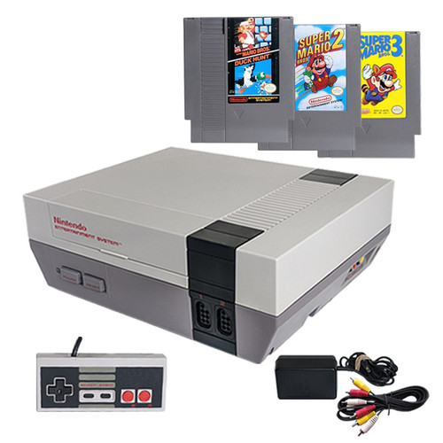
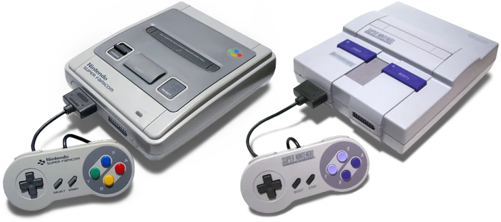

Nintendo legacy
Nintendo has a huge legacy from their first system the nes all the way to the upcoming switch 2! This page is only going to cover up until the wii era. Before Nintendo became a home console giant, they were busy shaking up arcades. Here's how it unfolded: 🧪 Early Experiments (Pre-Donkey Kong) In the early '70s, Nintendo was licensing Magnavox Odyssey tech and experimenting with light gun games like the Laser Clay Shooting System in bowling alleys. First real video game: EVR Race (1975) — an electro-mechanical horse racing game. Then came arcade titles like: Sheriff (1979) Radar Scope (1980) – a Galaxian-style shooter that tanked in the U.S. 🔥 The Breakthrough: Donkey Kong (1981) Nintendo had tons of Radar Scope machines collecting dust in the U.S. Young designer Shigeru Miyamoto was tasked with salvaging them — he created Donkey Kong, and the rest is history. Introduced: Jumpman (later renamed Mario) Pauline (first damsel in distress) Platforming gameplay (climbing ladders, jumping barrels) It was a huge hit worldwide and laid the foundation for Mario and modern platformers. Other Notable Arcade Titles: Donkey Kong Jr. (1982) – You play as Donkey Kong’s son to save him from Mario. Mario Bros. (1983) – First time Mario and Luigi team up. Punch-Out!! (1984) – Dual-screen boxing game that would later be adapted for NES.

🏠 Nintendo’s Home Console Legacy (Famicom to Wii) 🟥 Famicom / Nintendo Entertainment System (NES) – 1983 (JP), 1985 (NA) Japan: Family Computer or Famicom — red & white design. U.S.: NES — redesigned to resemble a VCR to rebuild trust after the 1983 video game crash. Introduced the D-pad controller (revolutionary at the time). Game distribution via cartridges, allowing diverse genres. Key Launch/Breakout Games: Super Mario Bros. – Platforming perfection. The Legend of Zelda – Exploration + battery save. Metroid – Open-ended sci-fi adventure. Castlevania, Mega Man, Punch-Out!!, Duck Hunt (with the Zapper gun). Impact: Standardized the home console market. Created the "Nintendo Seal of Quality" to ensure quality control. Sold over 60 million units worldwide.
NES
snes
🟣 Super Nintendo (SNES / Super Famicom) – 1990 (JP), 1991 (NA) 16-bit powerhouse: better sound, graphics, and controller. Dominated the console wars with Sega Genesis in the 90s. Strong first-party AND third-party support. Legendary Games: Super Mario World A Link to the Past Donkey Kong Country EarthBound Chrono Trigger Final Fantasy VI Super Metroid Innovations: Mode 7 graphics: rotation/scaling effects (e.g., F-Zero, Mario Kart). Introduced shoulder buttons on controllers.
N64
🟡 Nintendo 64 – 1996 First Nintendo console with 3D graphics. Used cartridges instead of discs (limited space but fast load times). Analog stick and four-player ports built-in. Pioneering Games: Super Mario 64 – defined 3D platforming. The Legend of Zelda: Ocarina of Time – cinematic adventure. GoldenEye 007, Mario Kart 64, Smash Bros.
After the N64 came the gamecube but you can read about that on the home page. After the Gamecube came the beloved WII!WII
⚪ Wii – 2006 Emphasized motion control + accessibility. Blew past Xbox 360 and PS3 in sales. Introduced Wii Channels, Virtual Console, and Mii characters. Essential Titles: Wii Sports Super Mario Galaxy Twilight Princess Smash Bros. Brawl Mario Kart Wii